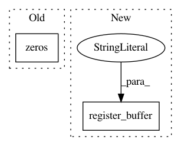

86f32d7fc3ee4afe67f6d0bd2a2a8db042406987,pixyz/flows/operations.py,BatchNormFlow,__init__,#BatchNormFlow#Any#Any#,224
Before Change
self.beta = nn.Parameter(torch.zeros(in_channels, 1, 1))
self.momentum = momentum
self._running_mean = torch.zeros(in_channels, 1, 1)
self._running_var = torch.ones(in_channels, 1, 1)
self._batch_mean = torch.zeros(in_channels, 1, 1)
self._batch_var = torch.ones(in_channels, 1, 1)
After Change
self.momentum = momentum
self.register_buffer("_running_mean", torch.zeros(in_features))
self.register_buffer("_running_var", torch.ones(in_features))
self.register_buffer("_batch_mean", torch.zeros(in_features))
self.register_buffer("_batch_var", torch.ones(in_features))
def forward(self, x, compute_jacobian=True):
In pattern: SUPERPATTERN
Frequency: 4
Non-data size: 2
Instances
Project Name: masa-su/pixyz
Commit Name: 86f32d7fc3ee4afe67f6d0bd2a2a8db042406987
Time: 2019-04-23
Author: masa@weblab.t.u-tokyo.ac.jp
File Name: pixyz/flows/operations.py
Class Name: BatchNormFlow
Method Name: __init__
Project Name: BindsNET/bindsnet
Commit Name: b6240c06fb49020e2d51703a1fcfddba7e27297d
Time: 2019-06-21
Author: djsaunde@umass.edu
File Name: bindsnet/network/nodes.py
Class Name: CurrentLIFNodes
Method Name: __init__
Project Name: BindsNET/bindsnet
Commit Name: b6240c06fb49020e2d51703a1fcfddba7e27297d
Time: 2019-06-21
Author: djsaunde@umass.edu
File Name: bindsnet/network/nodes.py
Class Name: AdaptiveLIFNodes
Method Name: __init__
Project Name: cornellius-gp/gpytorch
Commit Name: 5b3e337c7a67ea470dec1a4987eefb12168783f6
Time: 2017-11-13
Author: gpleiss@gmail.com
File Name: gpytorch/kernels/grid_interpolation_kernel.py
Class Name: GridInterpolationKernel
Method Name: __init__